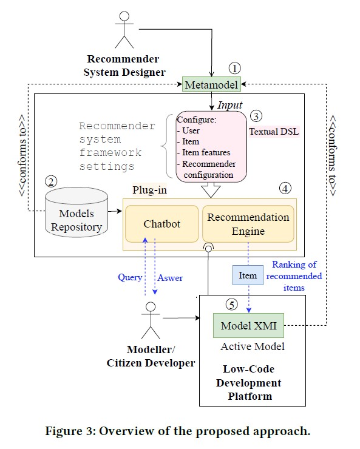
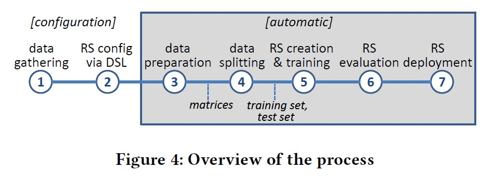
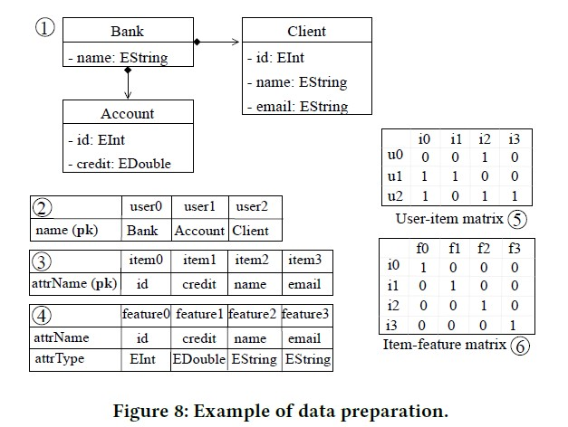

Towards automating the construction of recommender systems for low-code development platforms
用于低代码开发平台的推荐系统
4个问题
- 推荐系统可以帮助类建模吗？
- 哪一种推荐方法在相关属性、方法、超类的推荐上性能最好？
- 混合方法会更好吗？
- 考虑用户和项目交叉时，哪一种方法会更好？
动机
在使用低代码开发平台开发应用时，需要推荐系统推荐一些工件，如类中的属性和方法。
方法概述

推荐系统设计者使用DSL定义元模型（1），假设存在模型库（2）用于推荐。生成一个定制的推荐系统，嵌入到低代码开发平台之中，向开发者提供建议。
提出的方法

设计者只需要完成前两布，即数据收集和使用DSL配置推荐系统。第三步到第七步都是自动完成的
DSL配置
跟之前那篇一样
数据预处理
流程：
- 获取模型
- 提取与配置的用户、项目、项目特征类型对应的模型对象
- 生成用户-项目和项目-特征矩阵
例子：

（1）获取模型
（2）提取所有的用户（3）提取所有项目的名字（4）提取项目特征
（5）（6）两个矩阵